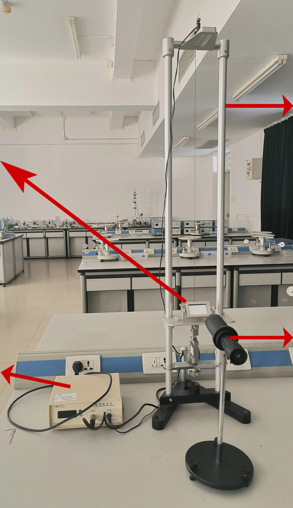

数字拉力计
实时显示给金属丝施加的拉力视值，精度0.01kg，用于精确控制金属丝的拉力。
使用时应注意避免所加的拉力超过实验规定的最大加力值。
实验装置

💡 拓展思考
除了课本上的这种实验装置，还有另一种杨氏模量测量仪，其望远镜与标尺固定在同一支架上，且两者相互平行，通过在砝码盘上增加砝码来给金属丝施力使其伸长，如下图所示。请思考：
（1）此装置的原理是什么？它的光杠杆放大倍数是多少？
（2）与课本中的装置相比，这种布局有什么优缺点？

💡 提示：
试着画出光路图分析。